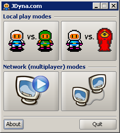

JDyna.com
This is a Java clone of the classic Dyna Blaster (Bomberman) game by Hudson Soft.
This software was created for fun and out of nostalgia only. It is not meant to
be sold or redistributed in any way other than for playing with a bunch of
friends at the office (during lunch breaks of course).
Required software
JDyna requires Java Web Start
technology (Java 1.6). Download Java from here if you
don't have it.
Launch JDyna!
(version @VERSION@, published: @BUILD.TSTAMP@).
Supported game modes and help
JDyna sports the following game modes:
- Local, two-players mode.
Play against your friend using the same keyboard.
Controller for player A: cursor keys and CTRL (bomb drop).
Controller for player B: DFGR keys (move) and Z (bomb drop).
- Local, player-computer mode. Play against one of several
computer artificial intelligence algorithms. Their actual
intelligence ranges from smart to practically infallible. If you can
win against tyson, you must be a robot or something.
- Network (LAN) games. Play together with your friends over a local
area network. The actual competition can involve individuals or entire teams
of players. Fun, fun, fun.
Troubleshooting
- Network mode does not work. Check your firewalls. JDyna uses
UDP broadcasts on port 50000 and TCP connections on ports 50000 and 50001.
- Does it work on Linux/ MacOS/ Windows? Yes, in the current
implementation everything should work on compatible Java virtual machines. The
performance of Java2D (drawing) engine may vary from platform to platform though.
- Sound does not work. Java Sound API is somewhat crippled and sound
is currently disabled. We do have it implemented, but it will be enabled when
it works properly (on all platforms).
- Where is the source code? Unfortunately we cannot release source
code to JDyna at this moment. If you're interested in development, however,
feel free to get in touch.
- Our boss/admin/colleague does not let me play. Peer involvement
is strongly encouraged and advised.
- Bots are too smart, I can't win. Practice harder.
Feedback
Your feedback is very welcome at (remove -BLAHBLAH from the address):
dawid.weiss-BLAHBLAH@gmail.com.
Release history
- Version 0.9. Alpha pre-release.